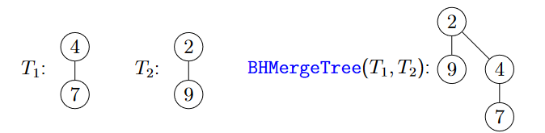
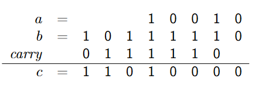
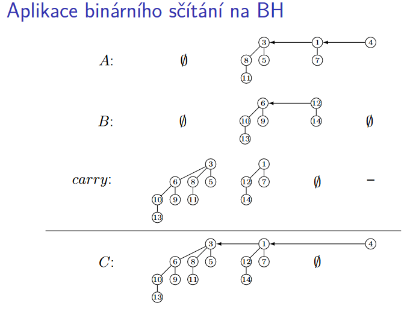
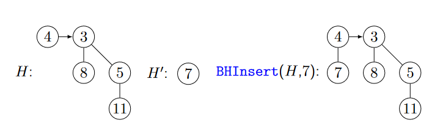
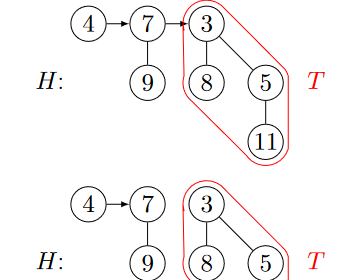

5.3 Operace na BH
Nalezení minima – BHFindMin(H):
- Minimum celé BH se musí nacházet v jednom z kořenů stromů \(T_{i}\).
- Stačí projít seznam \(\mathcal{T}\) , což bude trvat čas \(O(log n)\).
- Používáme-li tuto funkci často, vyplatí se udržovat ukazatel na tento globálně nejmenší kořen. Operaci BHFindMin lze pak provést v konstantním čase.
Sloučení dvou BH – BHMerge
- Sloučení dvou BH popíšeme nejdříve, protože se pomocí něho realizují ostatní operace.
- Operace BHMerge ze dvou BH vytvoří jedinou, obsahující sjednocení prvků obou vstupních BH.
- Nejprve popíšeme operaci BHMergeTree, která slije dohromady dva binomiální stromy stejného řádu \(B_{i}\) a vytvoří strom \(B_{i+1}\) (na to lze nahlížet i jako na sloučení dvou BH tvořených jediným binomiálním stromem stejného řádu).
Algoritmus 5.1 (BHMergeTree)
Algoritmus BHMergeTree
Vstup
Binomiální stromy \(T_{1}, T_{2}\) takové, že řád(\(T_{1}\)) = řád(\(T_{2}\))
Výstup
Výsledný strom \(T_{out}\)
Pozorování
Algoritmus BHMergeTree\((T_{1}, T_{2})\), kde řád(\(T_{1}\)) \(=\) řád(\(T_{2}\)), vytvoří korektní binomiální strom s řádem řád(\(T_{1}\)) \(+ 1\)
Tvrzení
BH lze implementovat tak, že BHMergeTree\((T_{1}, T_{2})\) má časovou složitost \(O(1).\)

Idea algoritmu BHMerge pro sloučení dvou BH
- Mějme BH \(A\) a \(B\), kde počet prvků \(A\) je \(a\) a v binárním zápise \(a = a_{k}a_{k−1} . . . a_{0}\) a počet prvků \(B\) je \(b = b_{ℓ}b_{ℓ−1} . . . b_{0}.\)
- Výsledná halda \(C\) bude mít \(c = a + b\) prvků, \(c = c_{m}c_{m−1} . . . c_{0}.\)
- Řády binomiálních stromů ve všech tří haldách jsou jednoznačně určeny binárním zápisem jejich počtu prvků.
-
Připomeňme "školní" algoritmus na sčítání binárních čísel \(a\) a \(b\) pod sebou:
jdeme od nejnižších řádů binárního zápisu k nejvyšším a- výsledný bit \(c_{i} = (a_{i} + b_{i} +\) carry\(_{i})\) mod \(2\), kde carry\(_{i}\) je tzv. přenos z předchozího řádu a
- následně carry\(_{i+1}\) := \((a_{i} + b_{i} +\) carry\(_{i}\)) div \(2.\)
Binární sčítání - příklad
- \(c_{i} = (a_{i} + b_{i} +\) carry\(_{i}\)) mod \(2\)
- carry\(_{i+1}\) := \((a_{i} + b_{i} +\) carry\(_{i})\) div \(2\)

Aplikace binárního sčítání na BH
Algoritmus na vytvoření BH \(C\) nyní zrcadlí předchozí algoritmus sčítání binárních čísel s tím rozdílem, že:
- Bity \(a_{i}, b_{i},\) carry\(_{i}\) budou nyní binomiální stromy \(A_{i}\), \(B_{i}\), carry\(_{i}\) řádu \(i\) nebo prázdné.
- Místo sčítání dvou jedničkových bitů voláme BHMergeTree na dva binomiální stromy stejného řádu, což vytvoří strom vyššího řádu a tedy přenos carry do dalšího řádu.
- Jsou-li všechny tři stromy \(A_{i}, B_{i},\) carry\(_{i}\) neprázdné, sloučíme \(A_{i}\) a \(B_{i}\) a výsledek se stane přenosem do vyššího řádu carry\(_{i+1}\) a do \(C_{i}\) přiřadíme carry\(_{i}\).
- Protože udržujeme seznamy binomiálních stromů BH uspořádané dle jejich řádů, lze algoritmus realizovat průchodem dvou ukazatelů po těchto seznamech a přeskakováním řádů stromů nepřítomných v BH.

Algoritmus 5.2 (BHMerge)
Algoritmus BHMerge
Věta 5.5 (o korektnosti a složitosti algoritmu BHMerge)
Věta o korektnosti a složitosti BHMerge
Algoritmus BHMerge je korektní a jeho časová složitost je \(O(log n).\)
Důkaz Věty 5.5
- V každé iteraci se zpracují všechny stromy řádu akt_rad.
- Následně se akt_rad zvýší o jedna.
- Všechny operace uvnitř cyklu trvají čas \(O(1)\).
- Nejvyšší řád je \(O(log n)\), celkový čas je tedy \(O(log n)\).
Vkládání prvku do BH - BHInsert
Algoritmus 5.3 (BHInsert)
Algoritmus BHInsert

Věta 5.6 (o složitosti algoritmu BHInsert)
Věta o složitosti algoritmu BHInsert
Operace BHInsert má v nejhorším případě složitost \(O(log n).\) Pro na počátku prázdnou BH trvá posloupnost \(n\) volání operace BHInsert čas \(O(n).\) BHInsert má tedy amortizovanou časovou složitost \(O^{*}(1).\)
Důkaz Věty 5.6
- Víme, že binomiální stromy tvořící \(n\)-prvkovou BH přesně odpovídají jedničkovým bitům v dvojkovém zápisu čísla \(n\).
- Operace BHInsert je sloučení s jednoprvkovou BH a to odpovídá operaci Inc binární sčítačky.
- Provedení operace BHMergeTree s \(O(1)\) složitostí během BHInsert odpovídá bitové inverzi v operaci Inc.
- Dle analýzy binární sčítačky má tedy operace BHInsert amortizovanou složitost \(O^{*}(1)\).
Vytvoření n prvkové BH – BHBuild
- Voláním BHInsert \(n\) krát po sobě vytvoříme BH o velikosti \(n.\)
- Podle předchozí analýzy bude trvat vytvoření \(n\)-prvkové BH čas \(O(n).\)
Odstranění minima z BH – BHExtractMin
Algoritmus 5.4 (BHInsert)
Algoritmus BHInsert
(4) Z T vytvoř novou BH H′
- Potřebujeme v čase \(O(log n)\) vytvořit BH ze synů (podstromů) stromu \(\mathcal{T}\) .
- Toho potřebujeme dosáhnout při zachování \(O(1)\) času pro BHMergeTree

Věta 5.7 (o složitosti algoritmu BHExtractMin)
Věta o složitosti algoritmu BHExtractMin
- Časová složitost operace BHExtractMin je \(O(log n)\).
Důkaz Věty 5.7
- Krok \((1)\) trvá čas \(O(1)\), stačí si udržovat minimový ukazatel na strom a vypojit ho ze seznamu.
- Kroky \((2)\) a \((4)\) trvají \(O(log n)\), protože kořen binomiálního stromu má nejvýše \(O(log n)\) synů.
- Sloučení hald trvá \(O(log n)\), včetně rekonstrukce minimového ukazatele